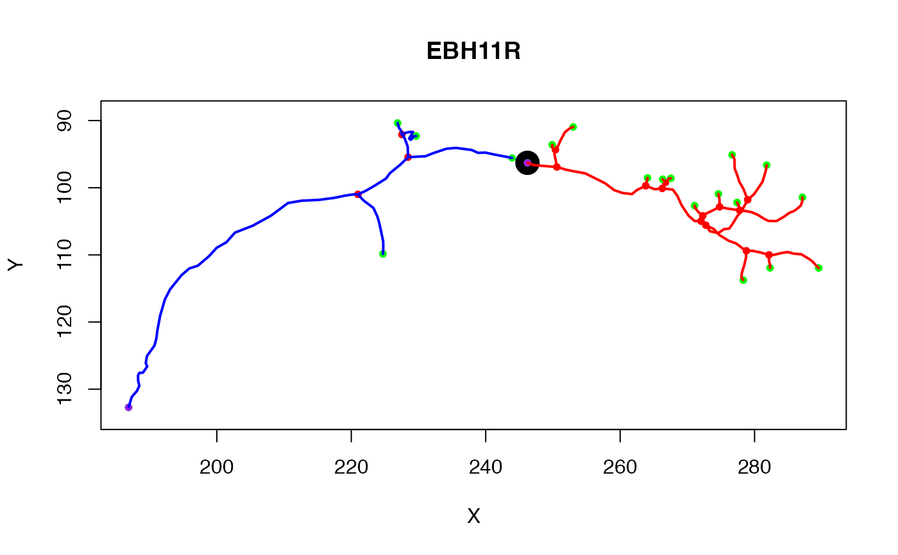

R/neuron.R
subset.neuron.RdSubset neuron by keeping only vertices that match given conditions
# S3 method for neuron subset(x, subset, invert = FALSE, ...)
| x | A neuron object |
|---|---|
| subset | A subset of points defined by indices, an expression, or a function (see Details) |
| invert | Whether to invert the subset criteria - a convenience when selecting by function or indices. |
| ... | Additional parameters (passed on to |
subsetted neuron
subset defines which vertices of the neuron to keep and is
one of
logical or numeric indices, in which case these are simply used to
index the vertices in the order of the data.frame x$d. Note that any
NA values are ignored.
a function (which is called with the 3D points array and returns T/F vector)
an expression evaluated in the context of the x$d data.frame
containing the SWC specification of the points and connectivity of the
neuron. This can therefore refer e.g. to the X,Y,Z location of vertices in
the neuron.
prune.neuron, prune_vertices,
subset.dotprops
Other neuron: neuron, ngraph,
plot.dotprops,
potential_synapses, prune,
resample, rootpoints,
spine
n=Cell07PNs[[1]] # keep vertices if their X location is > 2000 n1=subset(n, X>200) # diameter of neurite >1 n2=subset(n, W>1) # first 50 nodes n3=subset(n, 1:50) # everything but first 50 nodes n4=subset(n, 1:50, invert=TRUE) ## subset neuron by graph structure # first plot neuron and show the point that we will use to divide the neuron n=Cell07PNs[[1]] plot(n)# this neuron has a tag defining a point at which the neuron enters a brain # region (AxonLHEP = Axon Lateral Horn Entry Point) points(t(xyzmatrix(n)[n$AxonLHEP, 1:2]), pch=19, cex=2.5)# now find the points downstream (distal) of that with respect to the root ng=as.ngraph(n) # use a depth first search distal_points=igraph::graph.dfs(ng, root=n$AxonLHEP, unreachable=FALSE, neimode='out')$order distal_tree=subset(n, distal_points) plot(distal_tree, add=TRUE, col='red', lwd=2)# Find proximal tree as well # nb this does not include the AxonLHEP itself as defined here proximal_points=setdiff(igraph::V(ng), distal_points) proximal_tree=subset(n, proximal_points) plot(proximal_tree, add=TRUE, col='blue', lwd=2)# NOT RUN { ## subset using interactively defined spatial regions plot3d(n) # nb you can save this select3d object using save or saveRDS functions # for future non-interactive use s3d=select3d() n4=subset(n, s3d(xyzmatrix(n))) # special case of previous version n5=subset(n, s3d) stopifnot(all.equal(n4,n5)) # keep the points that were removed from n1 n4.not=subset(n,Negate(s3d)) # vertices with x position > 100 and inside the selector function n6=subset(n,X>100 & s3d(X,Y,Z)) ## subset each neuron object in a whole neuronlist n10=Cell07PNs[1:10] plot3d(n10, lwd=0.5, col='grey') n10.crop = nlapply(n10, subset, X>250) plot3d(n10.crop, col='red') ## subset a neuron using a surface library(nat.flybrains) # extract left lateral horn surface and convert to mesh3d lh=as.mesh3d(subset(IS2NP.surf, "LH_L")) # subset neuron with this surface x=subset(Cell07PNs[[1]], function(x) pointsinside(x, lh)) shade3d(lh, alpha=0.3) plot3d(x, lwd=3, col='blue') # Now find the parts of the neuron outside the surface y=subset(Cell07PNs[[1]], function(x) Negate(pointsinside)(x, lh)) plot3d(y, col='red', lwd=2) # }